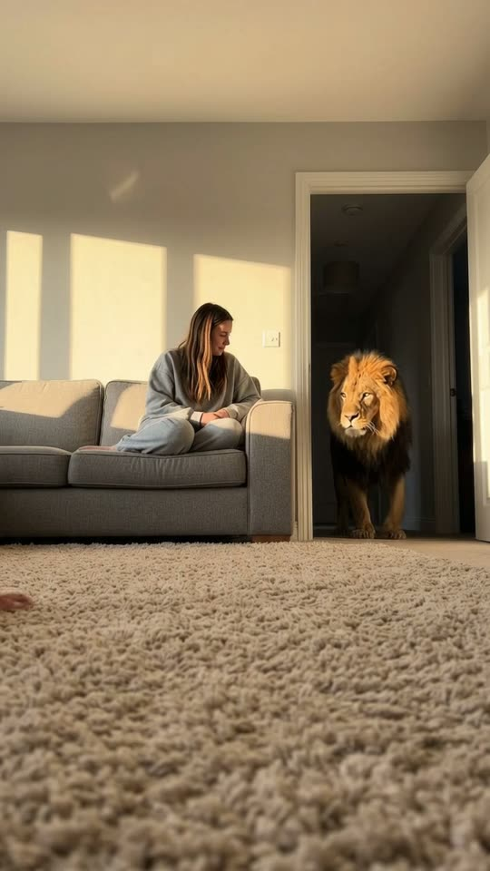
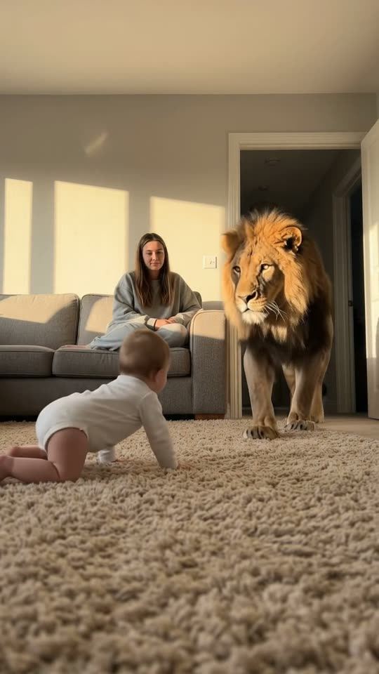
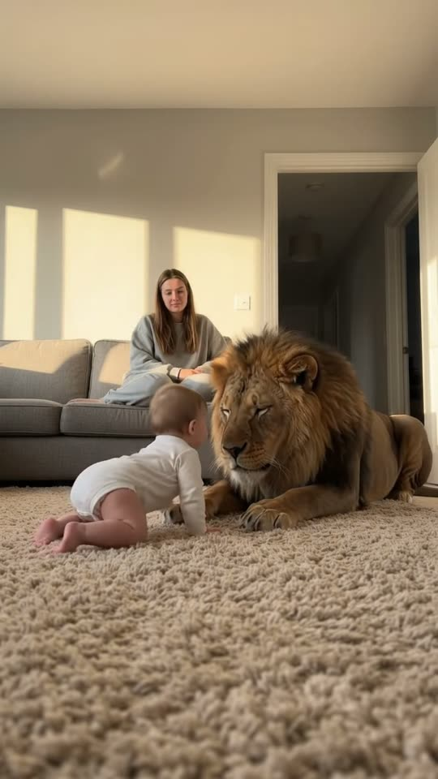
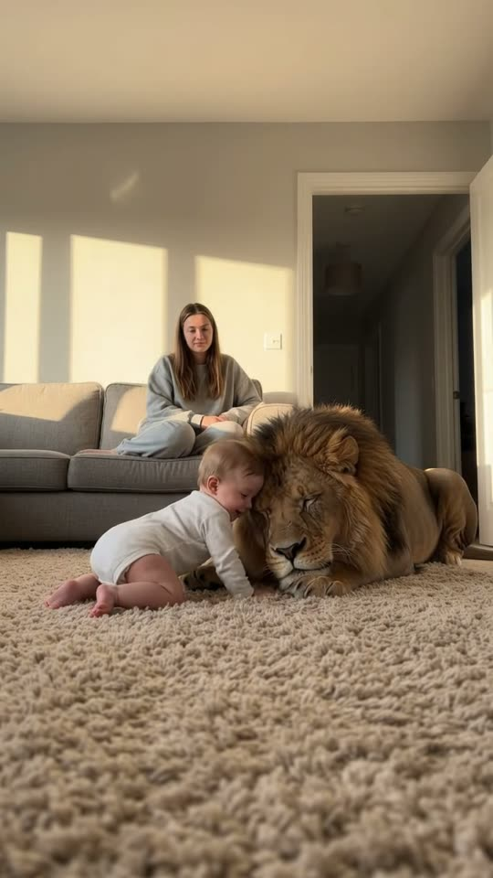

Free prompt pack
One lion.One nap.
Late-afternoon sun in a quiet living room. A lion steps out of the hallway, crosses the carpet and lies down beside a crawling baby. Tiny hands in his mane, and his eyes close first. One still image and one prompt, in one take.
Both prompts, in the order I ran them. Pat each lion slowly until he falls asleep. Tap the carpet to leave a paw print.
The first frame
The lion is already in the doorway. This image is frame one: from the carpet, a calm living room in late sun, a woman on the sofa and a lion standing in the hallway doorway. The carpet in front is empty.
Watch out
Leave the baby out of the image. Flow won't take a reference picture with a child in it, so the baby crawls in from the edge in the video prompt.

The prompt 140 words
Real photo taken from floor level, 30 cm above a soft beige shaggy carpet, in a quiet modern living room in the late afternoon. Low sunlight from a window out of frame on the left throws bright golden rectangles across the pale grey wall. In the background a young woman with long brown hair, in an oversized grey sweatshirt and grey sweatpants, sits cross-legged on a grey fabric sofa, calm, looking down at the carpet. To the right of the sofa, an open doorway to a dim hallway, and in it stands a large adult male lion facing us, with a thick dark-brown mane fringed with gold and a tawny coat, one side of his face lit by a stripe of sun. The carpet in front is wide and empty. Warm golden light, deep soft shadows, real detail, natural colour.
Lie down, close your eyes
Ten seconds, the camera never moves. Add the image as the reference, set 10 s, 9:16, 720p and audio on, and paste the prompt whole.
- 0–1.5 sout of the doorway, baby crawls in
- 1.5–4.0 sacross the room
- 4.0–6.0 she lies down beside the baby
- 6.0–10 sa hug, eyes closed
Watch out
Keep his mouth closed: no roar, no teeth, everything slow. That is what makes a lion next to a baby read as gentle instead of scary.
Fragments



The prompt 984 words
FORMAT Real home video filmed from floor level, seen as the finished exported video file: the full picture edge to edge, nothing on top of it. Whatever records the picture is never in frame. One continuous take in real time, no cuts. Vertical frame. The video runs at 24 fps. No frame is repeated. Real time, 1x speed, never slow motion. SCENE A quiet living room in late-afternoon sun. A baby crawls across the carpet while a young woman sits calmly on the sofa. A big male lion walks in from the hallway, crosses the room slowly, lies down on the carpet right beside the baby and lowers his head; the baby leans against his face and pats his mane, and the lion closes his eyes. Nobody is scared: everything is slow, soft and gentle. The take ends on the baby resting against the sleeping lion's mane. REFERENCE IMAGE Use it for the room, the light, the sofa, the woman, the hallway doorway and the lion. Everything matches it exactly, zero drift, no smoothing. The baby comes in from the bottom-left edge of the frame in the first second. The movement is described below. THE LION One real adult male lion: a thick dark-brown mane fringed with gold, a tawny coat, heavy paws, amber eyes, real fur that moves as he walks. Calm and slow the whole time: his mouth stays closed, he never roars, never shows his teeth, never jumps. THE BABY One baby of about nine months in a plain white long-sleeved onesie, soft light-brown hair, crawling on hands and knees. The same baby from the moment it appears to the last frame. THE WOMAN One young woman with long brown hair, in an oversized grey sweatshirt and grey sweatpants, sitting cross-legged on the grey sofa. She stays seated the whole time, relaxed, hands in her lap, watching; at the end she smiles a little. She never gets up. LOCATION MAP We are on the carpet 30 cm above the floor, 3 m from the sofa, looking at it. The sofa runs across the left and middle of the background with the woman on it; the hallway doorway is behind the right end of the sofa. The baby crawls in the middle of the carpet, 1.5 m from us. The lion comes out of the doorway, walks along the right side of the room toward us and lies down 30 cm to the right of the baby, his head toward the baby. FIRST FRAME The woman on the sofa at x 0-45%, y 18-48%; the hallway doorway at x 58-85%, y 10-48% with the lion standing in it facing us, lit on one side by a stripe of sun; golden rectangles of sunlight on the wall above the sofa; the empty beige carpet fills y 50-100%. Instant read: a lion standing in the doorway of a calm family living room. No delayed reveal. CAMERA Still, at floor level: it does not move, never pans, never zooms, never cuts, never goes to a wide shot or a close-up. The sofa, the woman and the doorway stay in the same place in the frame from the first frame to the last. ACTION TIMING 0–1.5 s — The lion steps out of the doorway into the room, slow and heavy; at the same time a baby crawls into the frame from the bottom-left edge onto the carpet. 1.5–4.0 s — The lion walks along the right side of the room toward us, his mane swaying with each step, paws sinking into the carpet; the baby crawls slowly toward the middle of the carpet; the woman watches, calm, still. 4.0–6.0 s — The lion passes 1 m to the right of us, turns toward the baby and lies down on his belly beside it, front paws stretched forward, and slowly lowers his head to the carpet next to the baby. 6.0–8.0 s — The baby crawls the last few centimetres and leans its forehead against the lion's cheek, small hands patting the mane; the lion closes his eyes. 8.0–10 s — The baby rests its face in the lion's mane; the lion breathes slowly, eyes closed, his side rising and falling; the woman smiles a little. Hold to the last frame. PHYSICS AND SCALE Real weight and real size: the lion is about 2.5 m long and his head is bigger than the baby; the carpet dents under his paws; he lowers himself onto the floor in stages, back legs first. The baby crawls at a real baby's speed. The lion never covers more than half the frame, even when he passes beside us. One lion, one baby, one woman. Nothing morphs. NO FULL-FRAME EVENTS Nothing ever fills the frame: the sofa, the woman and the sunlit wall stay visible in every frame. LIGHTING Low warm late-afternoon sun from the left: golden rectangles on the wall, rim light on the lion's mane and on the baby's hair, the rest of the room in soft warm shadow. One light, no flicker. AUDIO No music, no score, no narration, no subtitles. A quiet room: the soft heavy pad of the lion's paws on the carpet, a deep slow rumble of breath as he lies down, the baby's soft happy babbling and one small giggle at 7.0 s, the rustle of fur. No words. LOOK Real home video, seen as the finished exported file: natural colour, warm light, soft contrast, light compression, no film grain, no lens flare, no slow motion, never CGI, never a cartoon. No camera app interface: no shutter button, no gallery thumbnail, no record button, no icons, no timer, no recording dot, no frame lines. POSITIVE LOCKS One lion, one baby, one woman, one room. No captions, no subtitles, no on-screen text, no watermark, no logos, nothing on top of the picture. ONE LION. ONE BABY. NO CUTS. NO ROAR. NO SLOW MOTION. NO MUSIC.
Rule 01
Children come in by text
Flow refuses a reference image with a child. Shoot the room without the baby and have it crawl in from the edge in the first second.
Rule 02
Gentle is a body
Closed mouth, slow steps, lying down back legs first, eyes closing. Describe what the body does and the mood follows.
Rule 03
Never more than half
When he walks past the camera, he never covers more than half the frame. A frame full of fur is where the model cuts.
That's the whole build
Now go makeyour own gentle giant.
If yours works, send it over. I read every DM and the good ones end up on the account.
@martiiifons